Visualising and describing relationships
1 Outcome vs Explanatory
In the previous couple of weeks, we looked at how to handle different types of data, and how to describe and visualise categorical and numeric distributions. More often than not, research involves investigating relationships between variables, rather than studying variables in isolation.
If we are using one variable to help us understand or predict values of another variable, we call the former the explanatory variable and the latter the outcome variable.
Other names
- outcome variable = dependent variable = response variable = Y
- explanatory variable = independent variable = predictor variable = X
(referring to outcome/explanatory variables as Y and X respectively matches up with how we often want to plot them - the outcome variable on the y-axis, and the explanatory variable on the x-axis)
The distinction between explanatory and outcome variables is borne out in how we design experimental studies - the researcher manipulates the explanatory variable for each unit before the response variable is measured (for instance, we might randomly allocate participants to one of two conditions). This contrasts with observational studies in which the researcher does not control the value of any variable, but simply observes the values as they naturally exist.
We’re going to use data from a Stroop task.
1.1 Stroop data
The data we are going to use for these exercises is from an experiment using one of the best known tasks in psychology, the “Stroop task”.
130 participants completed an online task in which they saw two sets of coloured words. Participants spoke out loud the colour of each word, and timed how long it took to complete each set. In the first set of words, the words matched the colours they were presented in (e.g., word “blue” was coloured blue). In the second set of words, the words mismatched the colours (e.g., the word “blue” was coloured red, see Figure @ref(fig:stroop)). Participants’ recorded their times for each set (matching and mismatching).
Participants were randomly assigned to either do the task once only, or to record their times after practicing the task twice.
You can try out the experiment at https://faculty.washington.edu/chudler/java/ready.html.
The data is available at https://uoepsy.github.io/data/strooptask.csv
The data is experimental - researchers controlled the presentation of the stimuli (coloured words) and the assignment of whether or not participants received practice.
The researchers are interested in two relationships:
- the relationship between receiving practice (categorical) and the stroop-effect (numeric)
- the relationship between age (numeric) and the stroop-effect (numeric)
2 Numeric and Categorical
Recall that the “stroop-effect” is the difference (in seconds) between participants’ times on the mismatching set of words vs the matching set. We know how to describe a numeric variable such as the stroop-effect, for instance by calculating the mean and standard deviation, or median and IQR. We saw how to produce visualisations of numeric variables in the form of density curves, histogram, and boxplots.
# take the "stroopdata" dataframe |>
# summarise() it, such that there is a value called "mean_stroop", which
# is the mean() of the "stroop_effect" variable, and a value called "sd_stroop", which
# is the standard deviation of the "stroop_effect" variable.
stroopdata |>
summarise(
mean_stroop = mean(stroop_effect),
sd_stroop = sd(stroop_effect)
)# A tibble: 1 × 2
mean_stroop sd_stroop
<dbl> <dbl>
1 2.40 5.02ggplot(data = stroopdata, aes(x = stroop_effect)) +
geom_histogram()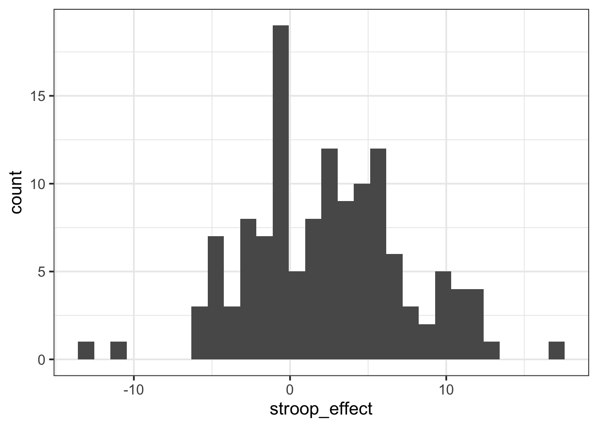
To understand the relationship between categorical (practice) and the numeric (stroop effect), for now we will simply calculate these summary statistics for the numeric variable when it is split by the different levels in the categorical variable.
In other words, we want to calculate the mean and standard deviation of the stroop_effect variable separately for those observations where practice is “no”, and for those where practice is “yes”:
| practice | stroop_effect |
|---|---|
| no | 9.69 |
| no | 10.07 |
| yes | -2.97 |
| yes | -0.23 |
| yes | -5.59 |
| no | 3.67 |
| yes | 1.41 |
| yes | 2.1 |
| yes | -0.33 |
| … | … |
We can do this using the group_by() function.
group_by()
The group_by() function creates a grouping in the dataframe, so that subsequent functions will be computed on each group.
It is most useful in combination with summarise(), to reduce a variable into a summary value for each group in a grouping variable:
Let’s do this for the Stroop Task data - we will summarise() the stroop_effect variable, after grouping the data by the practice variable:
# take the "stroopdata" |>
# and group it by each unique value in the "practice" variable (yes/no) |>
# then summarise() it FOR EACH GROUP, creating summary values called
# "mean_stroop" and "sd_stroop" which are the means and standard deviations of
# the "stroop_effect" variable entries for each group of "practice".
stroopdata |>
group_by(practice) |>
summarise(
mean_stroop = mean(stroop_effect),
sd_stroop = sd(stroop_effect)
)# A tibble: 2 × 3
practice mean_stroop sd_stroop
<chr> <dbl> <dbl>
1 no 4.54 4.25
2 yes 0.0229 4.75Visualising - Colours
Given the output above, which of the following visualisations is most representative of these statistics?
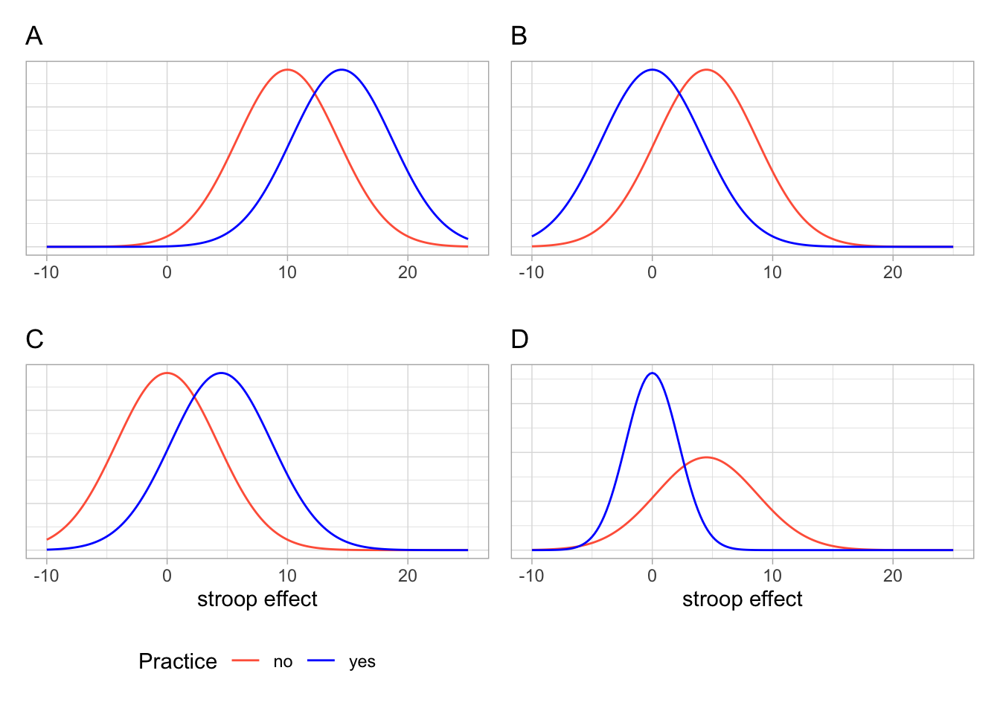
We know that the stroop effect for those with practice (blue line) was on average less than those without practice (red line). Both figures A and C don’t fit with this.
In both of the figures B and D, the blue (with practice) distribution peaks at about 0, and the red (without practice) distribution peaks at about 5. However, in the figure D, the red distribution is much flatter and wider. It has a larger standard deviation than the blue distribution. In our calculations above, the distributions have very similar standard deviations.
So the best visualisation of the two means and standard deviations we calculated is figure B.
We can visualise the data using the same code we had before, but with one small addition - we tell ggplot to colour the data according to the different values in the practice variable.
Note we add this inside the aes() mappings, because we are mapping something on the plot (the colour) to something in the data (the practice variable). If we just wanted to make the line blue, we could put col = "blue" outside the aes().
ggplot(data = stroopdata, aes(x = stroop_effect, col = practice)) +
geom_density()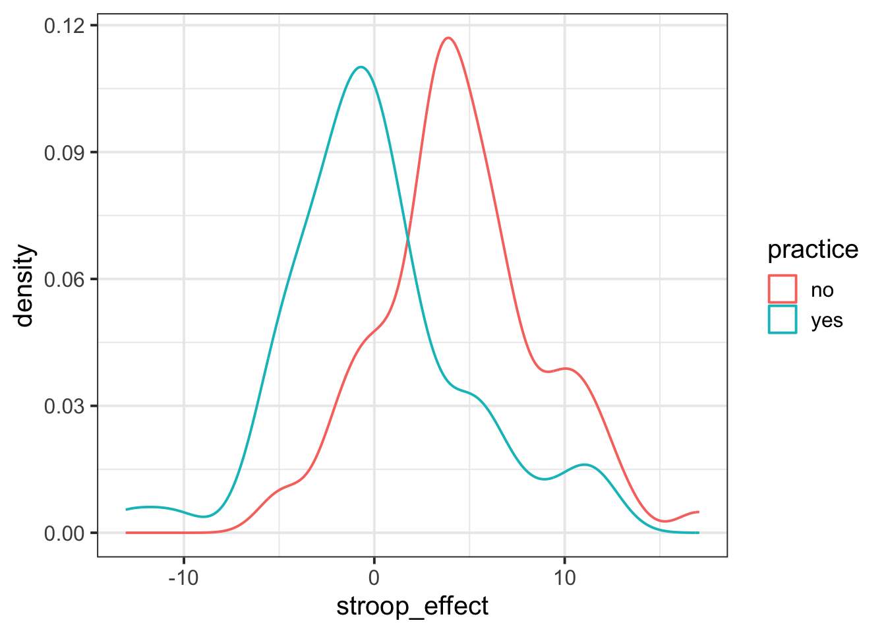
Visualising - Facets
Interpreting two density curves on top of one another works well, but overlaying two histograms on top of one another doesn’t. Instead, we might want to create separate histograms for each set of values (the stroop_effect variable values for each of practice/no practice groups).
facet_wrap() is a handy part of ggplot which allows us to easily split one plot into many:
ggplot(data = stroopdata, aes(x = stroop_effect)) +
geom_histogram() +
facet_wrap(~practice)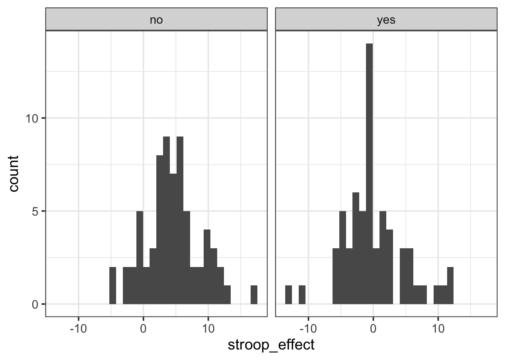
3 Numeric and Numeric
When we are interested in the relationship between two numeric variables, such as the one we have between age and the stroop-effect, the most easily interpreted visualisation of this relationship is in the form of a scatterplot:
# make a ggplot with the stroopdata
# put the possible values of the "age" variable on the x axis,
# and put the possible values of the "stroop_effect" variable on the y axis.
# for each entry in the data, add a "tomato1" coloured geom_point() to the plot,
ggplot(data = stroopdata, aes(x = age, y = stroop_effect)) +
geom_point(col="tomato1")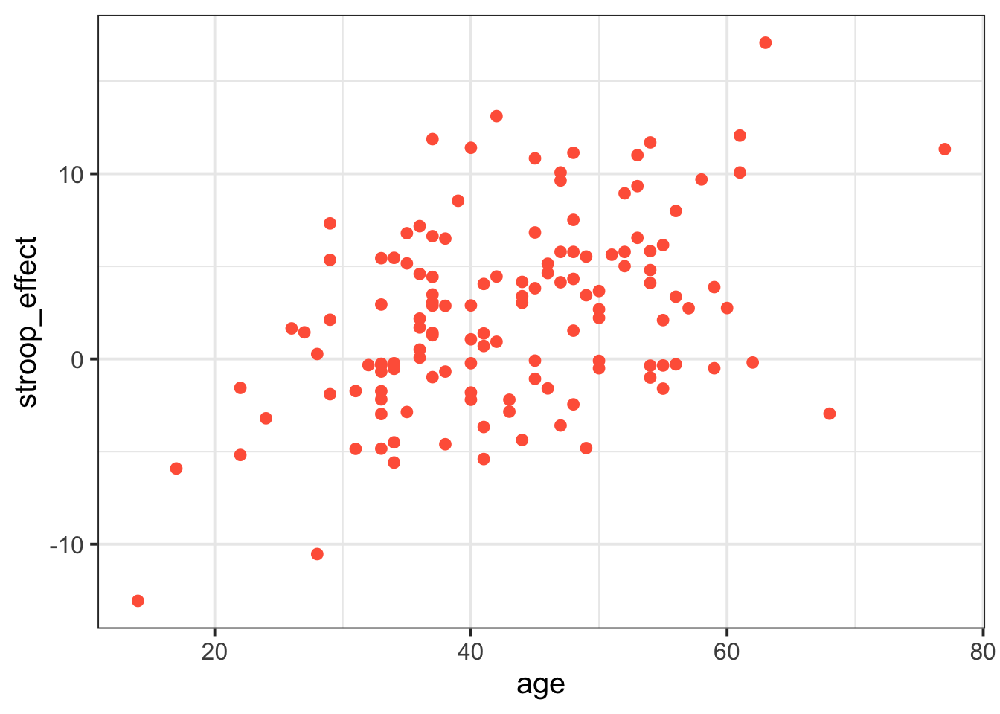
The visual pattern that these points make on the plot tells us something about the data - it looks like the older participants tended to have a greater stroop-effect.
But we can also have relationships between two numeric variables that look the opposite, or have no obvious pattern, or have a more consistent patterning (see Figure @ref(fig:numnumrels))

As a means of summarising these different types of relationships, we can calculate the covariance to describe in what direction, and how strong (i.e., how clear and consistent) the pattern is.
Covariance
We know that variance is the measure of how much a single numeric variable varies around its mean.
Covariance is a measure of how two numeric variables vary together, and can express the directional relationship between them.
Covariance is the measure of how two variables vary together.
For samples, covariance is calculated using the following formula:
\[\mathrm{cov}(x,y)=\frac{1}{n-1}\sum_{i=1}^n (x_{i}-\bar{x})(y_{i}-\bar{y})\]
where:
- \(x\) and \(y\) are two variables;
- \(i\) denotes the observational unit, such that \(x_i\) is value that the \(x\) variable takes on the \(i\)th observational unit, and similarly for \(y_i\);
- \(n\) is the sample size.
It often helps to understand covariance by working through a visual explanation.
Consider the following scatterplot:
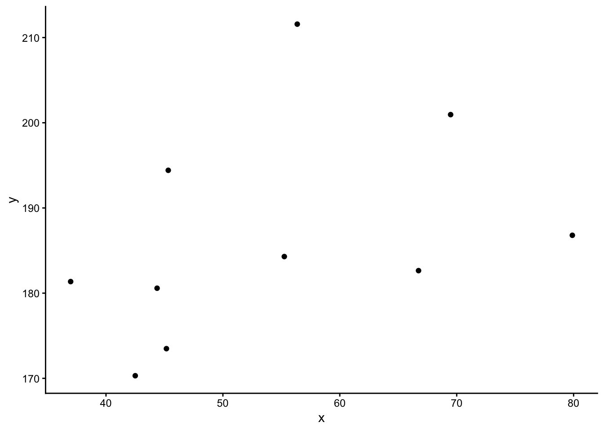
Now let’s superimpose a vertical dashed line at the mean of \(x\) (\(\bar{x}\)) and a horizontal dashed line at the mean of \(y\) (\(\bar{y}\)):
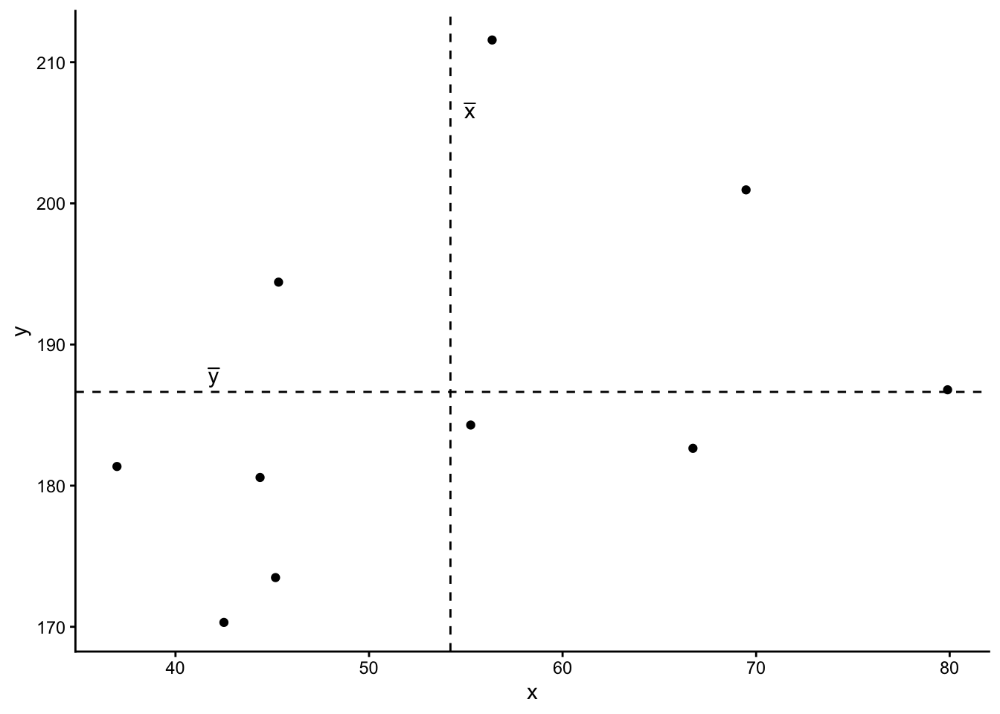
Now let’s pick one of the points, call it \(x_i\), and show \((x_{i}-\bar{x})\) and \((y_{i}-\bar{y})\).
Notice that this makes a rectangle.
As \((x_{i}-\bar{x})\) and \((y_{i}-\bar{y})\) are both positive values, their product - \((x_{i}-\bar{x})(y_{i}-\bar{y})\) - is positive.
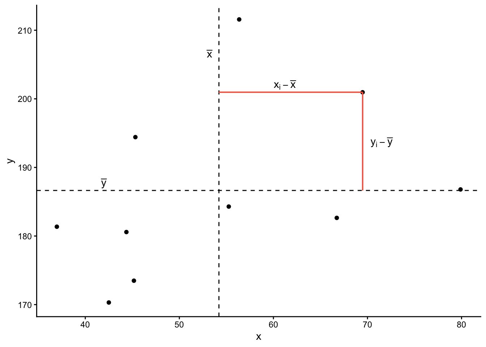
In fact, for all these points in red, the product \((x_{i}-\bar{x})(y_{i}-\bar{y})\) is positive (remember that a negative multiplied by a negative gives a positive):
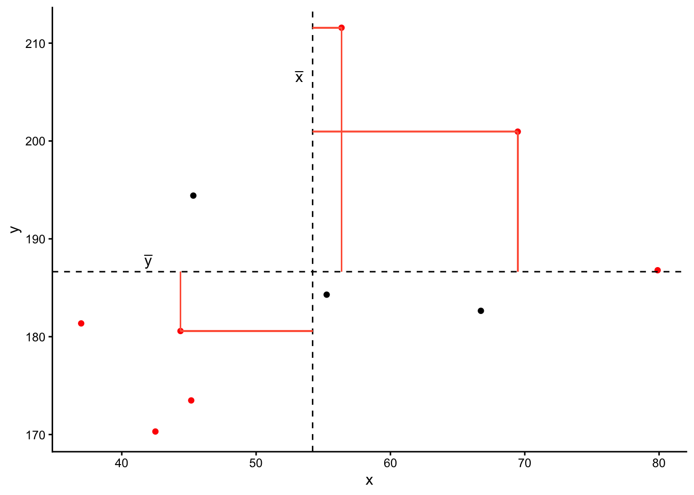
And for these points in blue, the product \((x_{i}-\bar{x})(y_{i}-\bar{y})\) is negative:
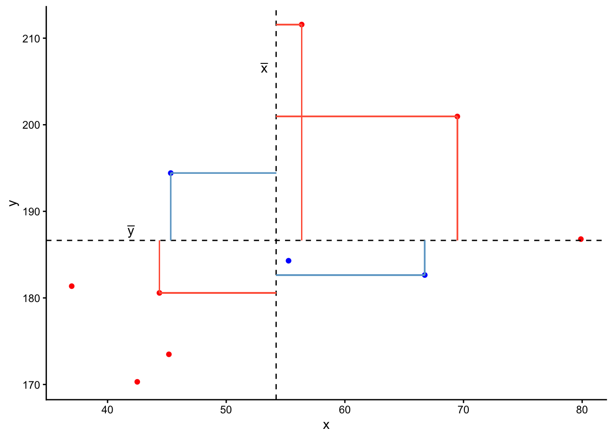
Now take another look at the formula for covariance:
\[\mathrm{cov}(x,y)=\frac{\sum_{i=1}^n (x_{i}-\bar{x})(y_{i}-\bar{y})}{n-1}\]
It is the sum of all these products divided by \(n-1\). It is the average of the products!
We can easily calculate the covariance between variables in R using the cov() function. cov() takes two variables cov(x = , y = ).
We can either use the $ to pull out the variables from the datset:
cov(stroopdata$age, stroopdata$stroop_effect)[1] 23.9597Or we can specify the dataframe, use the |> symbol, and call cov() inside summarise():
4 Categorical and Categorical
What if we are interested in the relationship between two variables that are both categorical?
As a quick example, let’s read in a dataset containing information on passengers from the Titanic. We can see from the first few rows of the dataset that there are quite a few categorical variables here:
# A tibble: 6 × 5
...1 class age sex survived
<dbl> <chr> <chr> <chr> <chr>
1 1 1st class adults man yes
2 2 1st class adults man yes
3 3 1st class adults man yes
4 4 1st class adults man yes
5 5 1st class adults man yes
6 6 1st class adults man yes Recall that we summarised one categorical variable using a frequency table:
titanic |>
count(survived)# A tibble: 2 × 2
survived n
<chr> <int>
1 no 817
2 yes 499We can also achieve this using the table() function:
no yes
817 499 Contingency Tables
Let’s suppose we are interested in how the Class of passengers’ tickets (1st Class, 2nd Class, 3rd Class) can be used to understand their survival.
We can create two-way table, where we have each variable on either dimension of the table:
no yes
1st class 122 203
2nd class 167 118
3rd class 528 178And we can pass this to prop.table() to turn these into proportions.
We can turn them into:
- proportions of the total:
titanic |>
select(class, survived) |>
table() |>
prop.table() survived
class no yes
1st class 0.09270517 0.15425532
2nd class 0.12689970 0.08966565
3rd class 0.40121581 0.13525836- proportions of each row:
titanic |>
select(class, survived) |>
table() |>
prop.table(margin = 1) survived
class no yes
1st class 0.3753846 0.6246154
2nd class 0.5859649 0.4140351
3rd class 0.7478754 0.2521246- proportions of each column:
titanic |>
select(class, survived) |>
table() |>
prop.table(margin = 2) survived
class no yes
1st class 0.1493268 0.4068136
2nd class 0.2044064 0.2364729
3rd class 0.6462668 0.3567134Mosaic Plots
The equivalent way to visualise a contingency table is in the form of a mosaic plot.
You can think of the prop.table(margin = ) as scaling the areas of one of the variables to be equal:
titanic |>
select(class, survived) |>
table() |>
prop.table(margin = 1) survived
class no yes
1st class 0.3753846 0.6246154
2nd class 0.5859649 0.4140351
3rd class 0.7478754 0.2521246In the table above, each row (representing each level of the “Class” variable) sums to 1. The equivalent plot would make each of level of the “Class” variable as the same area:
titanic |>
select(class, survived) |>
table() |>
prop.table(margin = 1) |>
plot()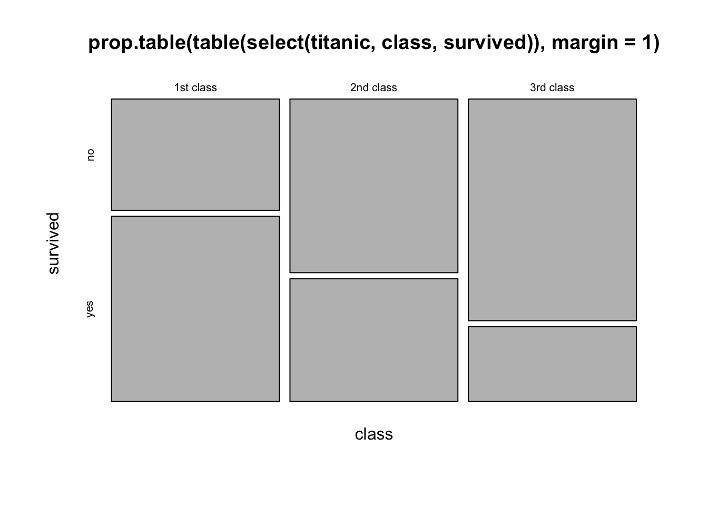
5 Glossary
- Explanatory variable: A variable used to understand or predict values of an outcome variable.
- Outcome variable: A variable which we are aiming to understand or predict via some explanatory variable(s).
- Scatterplot: A plot in which the values of two variables are plotted along the two axes, the pattern of the resulting points revealing any relationship which is present.
-
Covariance: A measure of the extent to which two variables vary together.
-
cov()To calculate the covariance between two variables. -
group_by()To apply a grouping in a dataframe for each level of a given variable. Grouped dataframes will retain their grouping, so that if we usesummarise()it will provide a summary calculation for each group. -
geom_point()To add points/dots to a ggplot. -
facet_wrap()To split a ggplot into multiple plots (facets) for each level of a given variable.